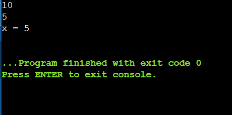

# 1
Problema M1.7
În notația (a)x litera x reprezintă baza sistemului de numerație, iar litera a - un număr scris în sistemul respectiv. Elaborați un program care calculează, dacă există, cel puțin o rădăcină a ecuației (a)x = b, unde a și b sunt numere naturale, iar x este necunoscuta. Fiecare cifră a numărului natural a aparține mulțimii {0, 1,2, ..., 9}, iar numărul b este scris în sistemul zecimal. Exemplu: rădăcina ecuației (160)x = 122 este x=8, iar ecuația (5)x=10 nu are soluții. Estimați complexitatea temporală a programului elaborat.
Rezultatul:

# 2
Problema M2.11
Stații. Patronul unei companii private de transport în comun a primit de la primăria orașului aprobarea de a putea folosi o parte din stațiile Regiei Locale de Transport în Comun. Stațiile disponibile sunt situate de-a lungul arterei principale a orașului. El se hotărăște să introducă o cursă rapidă care să străbată orașul, de la un capăt la celălalt, pe artera principală. Pentru început se ocupă de stațiile situate de aceeași parte a drumului. Patronul are o dilemă: dacă opririle vor fi prea dese, atunci străbaterea orașului va dura prea mult și va plictisi călătorii, iar dacă stațiile sunt prea rare, călătorii vor fi prea putini. De aceea, criteriile după care patronul stabilește stațiile în care va opri cursa rapidă sunt: - Între două stații alăturate să fie cel puțin x metri. - Numărul total de stații să fie maxim. 6 Ajutați patronul să aleagă stațiile! Date de intrare: Vom considera stațiile situate pe aceeași parte a arterei principale numerotate în ordine, dintr-un capăt până în celălalt cu 1, 2, ..., n. Prima linie a fișierului de intrare date.in conține un număr natural n, reprezentând numărul de stații situate pe artera principală. Următoarea linie conține n – 1 numere întregi ai, i = 1, 2, ..., n – 1 cu semnificația: ai este distanța dintre stația i și stația i + 1. Aceste numere vor fi separate prin câte un spațiu. Date de ieșire: Fișierul de ieșire date.out va conține două linii. Pe prima linie se va scrie un număr întreg k care reprezintă numărul maxim de stații alese de patron, iar pe a doua linie se vor afla k numere, reprezentând numerele de ordine ale acestor stații. Numerele vor fi scrise în ordine crescătoare. Restricții și precizări: - 1 ≤ n ≤ 1000; - 1 ≤ ai ≤ 2000, i = 1, 2, ..., n – 1; - 1 ≤ k ≤ 1000; - Dacă există mai multe soluții, în fișier se va scrie una singură. Exemplu: date.in 10 60 100 50 25 25 50 10 10 80 20 date.out 5 1 2 5 8 9
Rezultatul:
.png)
.png)
.png)
.png)